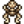

Araştırma Çadırı
| Araştırma Çadırı | |
 | |
 | |
| Açık Saatler: | Her Zaman |
| Adres: | Zencefil Adası'nın Kuzeyi |
| Oturanlar: | |
Araştırma Çadırı; Zencefil Adası ile Yanardağ'ın kuzeyinde ve Kazı Alanının doğusunda bulunabilir.
Salyangoz Hoca yakınlardaki bir mağaradan kurtarılana dek ofis, etkileşime girilebilecek herhangi bir şey barındırmaz ve boştur. Kurtardıktan sonra çadır çalışma masasına fosil bağışlayarak veya duvardaki Ada Gözlemi'ne cevaplar vererek Altın Ceviz kazanılabilir.
Bağışlar
Salyangoz Hoca, iki farklı yaratığın mumyalanmış kalıntısını ve adanın doğal geçmişini oluşturabilmek için iki farklı yaratığın daha ister. Aynı türün birden fazla fosili iskeletleri tamamlamak için kullanılabilir.
Oyuncu, bağış arayüzünde "İpucu" seçeneğini seçerek bağışlanabilir bir ögenin lokasyonu hakkında ipucu alabilir.
| Hayvan | Eşya | Gereken Adet | Nasıl Elde Edilir |
|---|---|---|---|
| Büyük Hayvan | 2 |
| |
| 1 |
| ||
| 1 |
| ||
| 1 |
| ||
| 1 |
| ||
| Kurbağa |  Mumyalanmış Kurbağa | 1 |
|
| Yarasa | 1 |
| |
| Yılan | 1 |
| |
| 2 |
|
Ada Gözlemi
Araştırma Çadırı'nın arkasında oyuncuya adadaki mor denizyıldızlarının ve mor çiçeklerin tam bir sayısını soran bir anket bulunur.
Oyuncu her gün anketi doğru cevaplamaya çalışabilir ve yanlış cevapladıktan sonra sonraki gün için beklemek zorundadır.
Mor Çiçekler
| Çözüm |
|---|
| 22 Mor Çiçek |
Mor Denizyıldızları
| Çözüm |
|---|
| 18 Mor Denizyıldızı |
Tamamlama Ödülleri
| Ödüller |
|---|
Oyuncu zaten hepsini toplamak için Altın Joja Papağanını kullanmışsa Altın Ceviz verilmez.
|

Referanslar
Geçmiş
- 1.5: Eklendi.
- 1.6: Oyuncu bütün Altın Cevizleri toplamak için Altın Joja Papağanı kullanmışsa bağışlar için alternatif ödüller eklendi.
| Binalar | ||
|---|---|---|
| Tüccarlar | Ada Taciri • Balıkçı • Bay Qi'nin Ceviz Odası • Büyücü'nün Kulesi • Çöl Tüccarı • Demirci • Dondurma Standı • Gezgin Araba • Harvey'nin Sağlık Ocağı • JojaMart • Kumarhane • Maceraperestler Loncası • Marangoz Atölyesi • Marnie'nin Çiftliği • Pierre'in Bakkalı • Vaha • Yanardağdaki Cüce • Yıkık Ev • Yıldızkaydı Salonu | |
| Evler | Ada Çiftlik Evi • Ağaç Ev • Başkan'ın Köşkü • Çadır • Çiftlik Evi • Elliott'ın Barakası • Irmak Sokağı, No: 1 • Irmak Sokağı, No: 2 • Karavan • Leah'nın Barakası • Dağ Sokağı, No: 24 • Söğüt Sokağı, No: 1 • Söğüt Sokağı, No: 2 | |
| Çiftlik Yapıları | Çiftçilik | Ahır • At Ahırı • Balçıkça Kümesi • Balık Havuzu • Baraka • Kulübe • Değirmen • Kuyu • Kümes • Sera • Silo |
| Özel | Ada Dikilitaşı • Altın Saat • Çiftlik Dikilitaşı • Çöl Dikilitaşı • Junimo Barakası • Su Dikilitaşı • Toprak Dikilitaşı | |
| Diğer Binalar | Araştırma Çadırı • Cadı'nın Barakası • Halkevi • Hamam • Joja Deposu • Köpek Oyun Alanı • Müze • Sinema Salonu | |